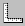

 Click the View Rulers button to display or hide the rulers. This button functions as a "toggle." If the rulers are currently visible, clicking the button will hide them. If the rulers are hidden, clicking the button will display them.
The View Rulers button is located on the Display Toolbar. It can also be accessed from the View menu.
If you hide the rulers, the Drawing Board becomes slightly larger.